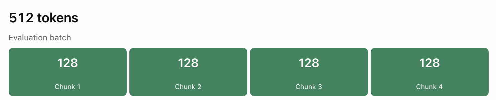

LM studio settings for Qwen3.8 27B and GPT-OSS-20B
Here are the settings I have used for my MacBook Pro M1 Pro, 32 GB unified memory, in LM studio. The settings include GPU offload, CPU thread pool, and memory management strategies. These configurations are crucial for optimizing the performance of the model in LM studio.
Context length is a critical parameter for both models, determining the maximum input length the model can process, but other parameters such as the number of threads and the batch size also play a role in optimizing performance.
Batch Size Settings
Evaluation Batch Size and Physical Batch Size are important parameters for managing the computational load during inference.
Evaluation Batch Size or Logical batch
Evaluation Batch Size controls how many tokens the model processes together during prompt evaluation. This setting can be adjusted to optimize the performance of the model during prompt evaluation.
Pi sends LM Studio a prompt containing 4,000 tokens. Instead of processing each token individually, the model processes tokens in batches. With an evaluation batch size of 512, LM Studio can evaluate up to 512 tokens together in a batch.
- Larger batch = potentially faster prompt processing
- Larger batch = more temporary memory required.
- Smaller batch = less memory pressure, potentially slower prompt processing.
Physical Batch Size or Physical computation batch
Physical Batch Size controls how the logical batch is divided into smaller computation chunks
- Smaller physical batches reduce peak temporary memory requirements.
- Larger physical batches can improve throughput.
- Too small can slow down prompt evaluation.

Context length and batch size solve different problems. Context length determines how much information the model can retain; batch size determines how it processes information. Increasing context doesn't automatically require increasing evaluation batch size.
I was able to test both models vibe coding a simple website. I use them in turn, so far the model that felt more comfortable using seems to be the OSS one Micou's it is much lighter and I'm still testing to find the best configuration. The issue with Qwen3.8 27B is that it requires more memory and processing power. Memory pressure was an issue and as I was monitoring in Activity Monitor, and the smallest request was turning the indicators to amber and triggering the fans
| LM Studio Setting | Qwen3.8 27B | GPT-OSS-20B | Explanation |
|---|---|---|---|
| GPU Offload | 65 | Maximum / Auto | Number of model layers offloaded to the GPU. More GPU offload generally reduces CPU computation but uses unified memory. |
| CPU Thread Pool | 8 | 8 | Number of CPU threads available for inference. |
| Evaluation Batch Size | 512 | 512 | Maximum number of tokens processed together during prompt evaluation. Larger batches can improve prompt processing speed but require more temporary memory. |
| Physical Batch Size | 128 | 128 | Divides the evaluation workload into smaller computation chunks. Smaller chunks reduce peak memory requirements but may slow processing. |
| Max Concurrent Predictions | 1 | 1 | Maximum number of simultaneous generation requests. One avoids competing inference workloads. |
| Unified KV Cache | ON | ON | Allows KV cache allocation to be shared across sequences. |
| Context Checkpoints | 4 | 4 | Number of saved intermediate context states for reuse during prompt processing. |
| Offload KV Cache to GPU | ON | ON | Places KV cache in GPU-accessible memory to accelerate attention computation. |
| Keep Model in Memory | OFF | OFF | Allows model resources to be released when the model is unloaded. |
| Try mmap() | ON | ON | Maps model files into memory instead of explicitly copying the entire model into RAM. |
| Flash Attention | ON | ON | Uses a more memory-efficient attention implementation, particularly useful with longer contexts. |
| K Cache Quantization | Q4_0 | Auto / Default | Reduces memory consumption for key vectors in the KV cache. |
| V Cache Quantization | Q4_0 | Auto / Default | Reduces memory consumption for value vectors in the KV cache. |
| Speculative Decoding | OFF | OFF | Uses draft predictions to potentially accelerate token generation, with additional resource requirements. |
| Context Length | 8,192 | 24,576 | Maximum input context available to the model. Larger contexts require more KV cache memory. |